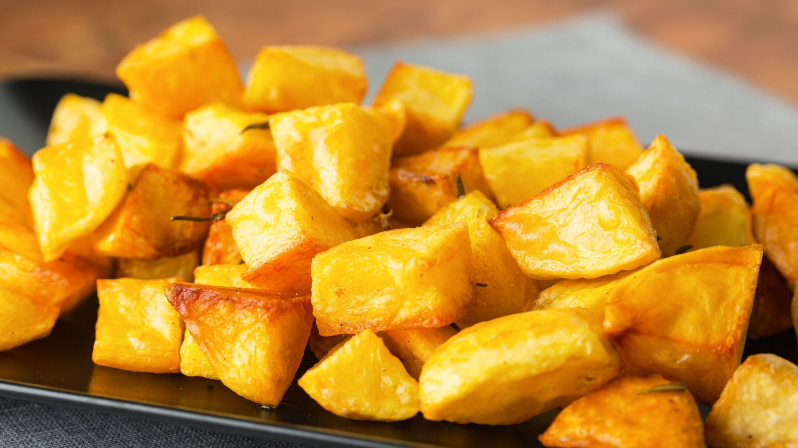

Patate al forno

PRESENTAZIONE:
Una tira l’altra ma non sono le ciliegie... sono le patate!
In questa ricetta nella loro veste più classica, il contorno con le patate per eccellenza: le patate al forno!
Impossibile non amarle con il pesce o carne, come il classico arrosto per una cena coi fiocchi.
In tantissimi ci avete chiesto qual è il segreto per delle patate al forno croccanti e dorate, insomma perfette.
INGREDIENTI:
- Patate
- Aglio
- Sale fino q.b
- Timo
- Rosmarino
- Olio extravergine d'oliva
- Pepe nero
PREPARAZIONE:
- Per preparare le patate al forno come prima cosa lavatele bene e sbucciatele.
- Dividete le patate a metà per il senso della lunghezza e poi in quarti.
- Da queste ricavate dei cubetti grandi un paio di cm e man mano trasferitele in una ciotola.
- In una pentola portate ad ebollizione abbondante acqua e immergete le patate.